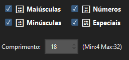
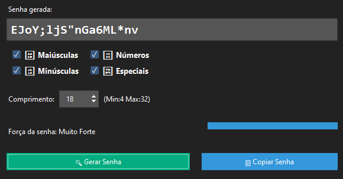
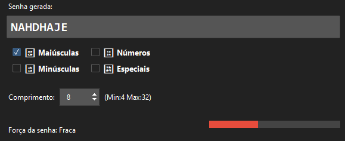
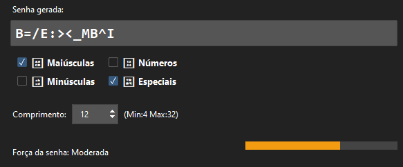

Desenhado para a criação de senhas fortes facilmente, com medidor de força, função de copiar senha e personalizar o tipo de senha.
Com a possibilidade de definir o tamanho e os tipos de caracteres, pode selecionar o tipo de senha que deseja.
Após selecionar as opções de caracteres e o tamanho desejado, é só clicar no botão "Gerar Senha" e o programa cria uma senha para si.
O medidor de força mostra o qual forte é a sua palavra-passe, utilizando métodos identicos mas não 100% realistas dos medidores de força que existem no mercado.
Pelo qual, não é recomendado a utilização do programa para sistemas que exigem muita segurança, como bancos, base de dados críticas, etc.
 